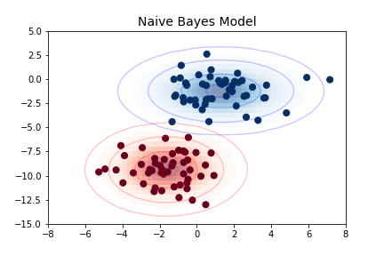

Bu sayfa orijinal kitap bölümünün eksiksiz Türkçe uyarlamasıdır — atlanan başlık/kod yoktur. Zor yerlerde ek ders notu ve 🧪 Şimdi deneyin kutuları vardır.
Orijinal (EN): 05.05 Naive Bayes · Jupyter notebook
5.5 Derinlemesine: Naive Bayes Sınıflandırması
Orijinal: 05.05 Naive Bayes
Önceki dört bölüm makine öğrenmesi kavramlarına genel bir bakış verdi. Bu ve sonraki bölümlerde önce denetimli öğrenme için dört algoritmaya, ardından denetimsiz öğrenme için dört algoritmaya daha yakından bakacağız. Denetimli yöntemlerimizden ilki olan naive Bayes sınıflandırmasıyla başlıyoruz.
Naive Bayes modelleri çok hızlı ve basit sınıflandırma algoritmaları grubudur; çok yüksek boyutlu veri kümeleri için sıkça uygundur. Çok hızlı olmaları ve ayarlanabilir parametreleri az olduğu için sınıflandırma problemlerinde hızlı bir temel çizgi (baseline) olarak yararlıdırlar. Bu bölüm naive Bayes sınıflandırıcılarının sezgisel açıklamasını ve birkaç veri kümesindeki örneklerini sunar.
Bayes Sınıflandırması
Naive Bayes sınıflandırıcıları Bayes sınıflandırma yöntemleri üzerine kuruludur. Bunlar Bayes teoremini kullanır; bu teorem koşullu olasılıklar arasındaki ilişkiyi tanımlar. Bayes sınıflandırmasında gözlemlenen öznitelikler verildiğinde bir etiket $L$'nin olasılığı $P(L~|~{\rm features})$ ile ilgileniyoruz. Bayes teoremi bunu daha doğrudan hesaplayabileceğimiz niceliklerle ifade etmemizi sağlar:
$$P(L~|~{\rm features}) = \frac{P({\rm features}~|~L)P(L)}{P({\rm features})}$$
İki etiket $L_1$ ve $L_2$ arasında karar vermek istiyorsak, her etiket için posterior olasılıkların oranını hesaplayabiliriz:
$$\frac{P(L_1~|~{\rm features})}{P(L_2~|~{\rm features})} = \frac{P({\rm features}~|~L_1)}{P({\rm features}~|~L_2)}\frac{P(L_1)}{P(L_2)}$$
Her etiket için $P({\rm features}~|~L_i)$ hesaplayabileceğimiz bir modele ihtiyacımız var. Böyle bir modele üretici model denir; veriyi üreten varsayımsal rastgele süreci tanımlar. Her etiket için üretici modeli tanımlamak bu Bayes sınıflandırıcısının eğitiminin ana parçasıdır. Bu eğitim adımının genel hali çok zordur; ancak model biçimine dair basitleştirici varsayımlarla kolaylaştırabiliriz.
"Naive" Bayes'teki "naive" buradan gelir: her etiket için üretici model hakkında çok naif varsayımlar yaparsak, her sınıf için üretici modelin kaba bir yaklaşımını bulup Bayes sınıflandırmasına devam edebiliriz. Farklı naive Bayes türleri veri hakkında farklı naif varsayımlara dayanır; aşağıda birkaçını inceleyeceğiz.
Standart içe aktarmalarla başlayalım:
%matplotlib inline
import numpy as np
import matplotlib.pyplot as plt
import seaborn as sns
plt.style.use('seaborn-whitegrid')Gauss Naive Bayes
Anlaşılması belki de en kolay naive Bayes sınıflandırıcısı Gauss naive Bayes'tir. Bu sınıflandırıcıda varsayım, her etiketten gelen verinin basit bir Gauss dağılımından çekilmesidir. Aşağıdaki veriyi düşünün (Şekil 41-1):
from sklearn.datasets import make_blobs
X, y = make_blobs(100, 2, centers=2, random_state=2, cluster_std=1.5)
plt.scatter(X[:, 0], X[:, 1], c=y, s=50, cmap='RdBu');En basit Gauss modeli, verinin boyutlar arası kovaryans olmadan Gauss dağılımıyla tanımlandığını varsayar. Bu model her etiket içindeki noktaların ortalama ve standart sapmasını hesaplayarak uydurulabilir; böyle bir dağılımı tanımlamak için gereken tek şey budur. Bu naif Gauss varsayımının sonucu aşağıdaki şekilde gösterilir:

Buradaki elipsler her etiket için Gauss üretici modelini temsil eder; elips merkezine doğru olasılık daha yüksektir. Her sınıf için üretici model yerindeyken herhangi bir veri noktası için $P({\rm features}~|~L_1)$ olabilirliğini hızlıca hesaplayabilir; böylece posterior oranı hesaplayıp verilen nokta için en olası etiketi belirleriz.
Bu prosedür Scikit-Learn'ün sklearn.naive_bayes.GaussianNB tahmin edicisinde uygulanmıştır:
from sklearn.naive_bayes import GaussianNB
model = GaussianNB()
model.fit(X, y);Yeni veri üretip etiket tahmin edelim:
rng = np.random.RandomState(0)
Xnew = [-6, -14] + [14, 18] * rng.rand(2000, 2)
ynew = model.predict(Xnew)Bu yeni veriyi çizerek karar sınırının nerede olduğuna bakalım (aşağıdaki şekil):
plt.scatter(X[:, 0], X[:, 1], c=y, s=50, cmap='RdBu')
lim = plt.axis()
plt.scatter(Xnew[:, 0], Xnew[:, 1], c=ynew, s=20, cmap='RdBu', alpha=0.1)
plt.axis(lim);Sınıflandırmalarda hafif eğri bir sınır görüyoruz — genelde Gauss naive Bayes modelinin ürettiği sınır ikinci dereceden olur.
Bu Bayes biçiminin güzel yanı, predict_proba yöntemiyle olasılıksal sınıflandırmaya doğal olarak izin vermesidir:
yprob = model.predict_proba(Xnew)
yprob[-8:].round(2)Sütunlar sırasıyla birinci ve ikinci etiketin posterior olasılıklarını verir. Sınıflandırmada belirsizlik tahminleri arıyorsanız bu tür Bayes yaklaşımları iyi bir başlangıç noktası olabilir.
Elbette nihai sınıflandırma yalnızca ona yol açan model varsayımları kadar iyi olacaktır; bu yüzden Gauss naive Bayes sık sık çok iyi sonuç vermez. Yine de birçok durumda — özellikle öznitelik sayısı büyüdükçe — bu varsayım Gauss naive Bayes'in güvenilir bir yöntem olmasını engelleyecek kadar zararlı değildir.
predict_proba her sınıf için olasılık vektörü döndürür; en yüksek olasılıklı sınıf predict ile aynıdır. Eşik veya "bilmiyorum" kararı için olasılıkları kullanabilirsiniz.
Multinomial Naive Bayes
Az önce anlatılan Gauss varsayımı her etiket için üretici dağılımı tanımlamanın tek basit varsayımı değildir. Başka yararlı bir örnek multinomial naive Bayes'tir; özniteliklerin basit bir multinomial dağılımdan üretildiği varsayılır. Multinomial dağılım bir dizi kategori arasında gözlemlenen sayımların olasılığını tanımlar; bu yüzden multinomial naive Bayes sayımları veya sayım oranlarını temsil eden öznitelikler için en uygundur.
Fikir öncekiyle aynıdır; yalnızca veri dağılımını en iyi Gauss ile değil en iyi multinomial dağılımla modellemek farkı vardır.
Örnek: Metin Sınıflandırması
Multinomial naive Bayes'in sık kullanıldığı yer metin sınıflandırmasıdır; öznitelikler sınıflandırılacak belgelerdeki kelime sayımları veya frekanslarıyla ilgilidir. Metinden bu özniteliklerin çıkarımını Öznitelik Mühendisliği bölümünde tartıştık; burada Scikit-Learn üzerinden 20 Newsgroups külliyatının seyrek kelime sayımı özniteliklerini kullanarak kısa belgeleri kategorilere sınıflandırmayı göstereceğiz.
Veriyi indirip hedef adlarına bakalım:
from sklearn.datasets import fetch_20newsgroups
data = fetch_20newsgroups()
data.target_namesBasitlik için yalnızca birkaç kategori seçip eğitim ve test kümelerini indireceğiz:
categories = ['talk.religion.misc', 'soc.religion.christian',
'sci.space', 'comp.graphics']
train = fetch_20newsgroups(subset='train', categories=categories)
test = fetch_20newsgroups(subset='test', categories=categories)Veriden temsil bir giriş:
print(train.data[5][48:])Bu veriyi makine öğrenmesinde kullanmak için her dizenin içeriğini sayılar vektörüne dönüştürmemiz gerekir. Bunun için TF–IDF vektörizörünü (Öznitelik Mühendisliği bölümünde tanıtıldı) kullanıp multinomial naive Bayes sınıflandırıcısına bağlayan bir pipeline oluşturacağız:
from sklearn.feature_extraction.text import TfidfVectorizer
from sklearn.naive_bayes import MultinomialNB
from sklearn.pipeline import make_pipeline
model = make_pipeline(TfidfVectorizer(), MultinomialNB())Bu pipeline ile modeli eğitim verisine uygulayıp test verisi için etiket tahmin edebiliriz:
model.fit(train.data, train.target)
labels = model.predict(test.data)Test verisi için etiketleri tahmin ettikten sonra tahmin edicinin performansını öğrenmek için değerlendirebiliriz. Örneğin test verisinde gerçek ve tahmin edilen etiketler arasındaki karmaşıklık matrisine bakalım (aşağıdaki şekil):
from sklearn.metrics import confusion_matrix
mat = confusion_matrix(test.target, labels)
sns.heatmap(mat.T, square=True, annot=True, fmt='d', cbar=False,
xticklabels=train.target_names, yticklabels=train.target_names,
cmap='Blues')
plt.xlabel('true label')
plt.ylabel('predicted label');Görülüyor ki bu çok basit sınıflandırıcı bile uzay tartışmalarını bilgisayar tartışmalarından ayırabilir; ancak din ve Hristiyanlık tartışmaları arasında karışır. Bu belki de beklenebilir!
İlginç olan, predict yöntemiyle herhangi bir dize için kategoriyi belirleyebilmemizdir.
Tek bir dize için tahmin döndüren bir yardımcı fonksiyon:
Gauss naive Bayes ile make_blobs verisinde sınıflandırma deneyin:
from sklearn.datasets import make_blobs
from sklearn.naive_bayes import GaussianNB
X, y = make_blobs(n_samples=100, centers=2, random_state=0)
clf = GaussianNB().fit(X, y)
print("Doğruluk (eğitim):", clf.score(X, y))def predict_category(s, train=train, model=model):
pred = model.predict([s])
return train.target_names[pred[0]]Deneyelim:
predict_category('sending a payload to the ISS')predict_category('discussing the existence of God')predict_category('determining the screen resolution')Bunun dizedeki her kelimenin (ağırlıklı) frekansı için basit bir olasılık modelinden fazlası olmadığını unutmayın; yine de sonuç çarpıcıdır. Çok naif bir algoritma bile dikkatle kullanıldığında ve yüksek boyutlu büyük veri kümesi üzerinde eğitildiğinde şaşırtıcı derecede etkili olabilir.
Naive Bayes Ne Zaman Kullanılır?
Naive Bayes sınıflandırıcıları veri hakkında bu kadar katı varsayımlar yaptığından genelde daha karmaşık modeller kadar iyi performans göstermez. Yine de birkaç avantajları vardır:
- Eğitim ve tahmin için hızlıdır.
- Doğrudan olasılıksal tahmin sağlar.
- Genelde kolay yorumlanır.
- Az (hatta hiç) ayarlanabilir parametreleri vardır.
Bu avantajlar naive Bayes sınıflandırıcısının sıkça iyi bir başlangıç temel çizgisi olması anlamına gelir. Uygun performans gösterirse tebrikler: probleminiz için çok hızlı, çok yorumlanabilir bir sınıflandırıcınız var. İyi değilse, ne kadar iyi olmaları gerektiğine dair temel bilgiyle daha gelişmiş modellere geçebilirsiniz.
Naive Bayes sınıflandırıcıları özellikle şu durumlarda iyi performans gösterir:
- Naif varsayımlar gerçekten veriye uyduğunda (pratikte çok nadirdir)
- Kategoriler iyi ayrıldığında, model karmaşıklığı daha az önemli olduğunda
- Çok yüksek boyutlu veride, model karmaşıklığı daha az önemli olduğunda
Son iki nokta farklı görünür ama aslında ilişkilidir: veri kümesinin boyutu arttıkça iki noktanın birbirine yakın bulunması çok daha az olasıdır (genel olarak yakın olmak için her boyutta yakın olmaları gerekir). Bu yüzden yüksek boyutlarda kümeler ortalama olarak daha ayrık olma eğilimindedir; yeni boyutlar gerçekten bilgi eklediyse varsayılır. Bu nedenle burada tartışılan basit sınıflandırıcılar, boyut arttıkça daha karmaşık sınıflandırıcılar kadar veya onlardan daha iyi çalışabilir: yeterli veriniz olduğunda basit bir model bile çok güçlü olabilir.